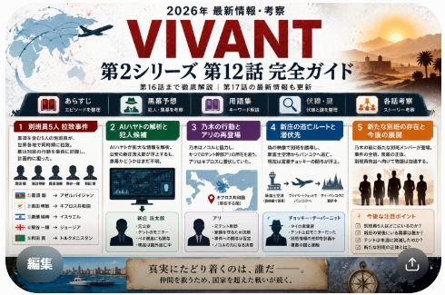
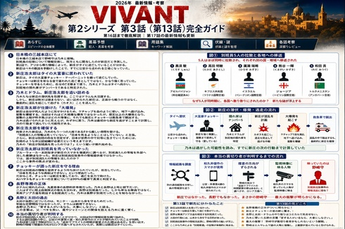

VIVANT シリーズ2
各話のあらすじ・人物関係・伏線・考察を、見返しながら分かりやすく整理していきます。

第1話｜赤い饅頭、別班員5人拉致、そして「1544」の謎
前作ラストから直結。別班が「追う側」から「狙われる側」へ変わる新章の始まりを整理します。
第1話を見る →

第2話｜新庄の逃亡ルート、チョッキー、そして新たな別班
アリの尋問、新庄の本当の逃亡先、情報売却計画、そして長野専務の正体までを整理します。
第2話を見る →

第3話｜新庄の潔白、長野の正体、そして野崎への疑念
新庄を追い詰めた先で事件の構図が反転。長野専務の正体と、野崎に向けられた最大の疑いまでを整理します。
第3話を見る →